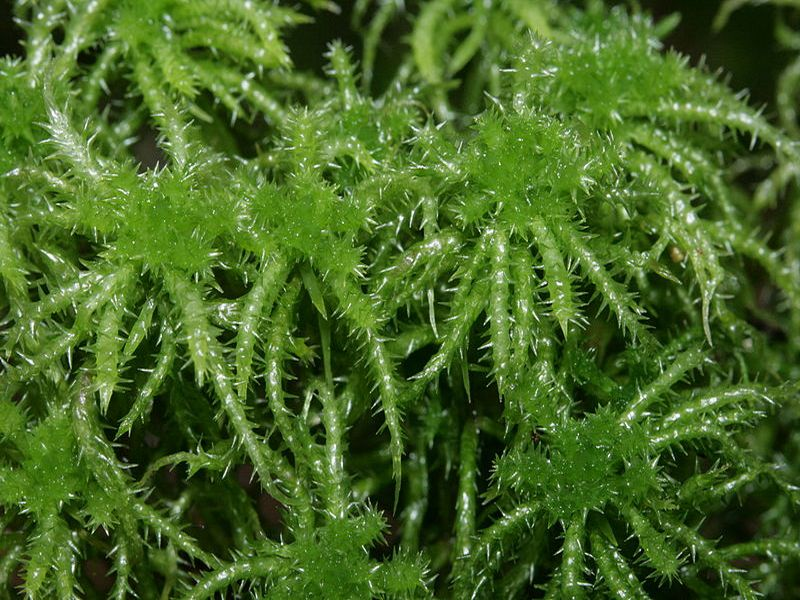

Sparrige Torfmoos
Sphagnum squarrosum
Das Sparrige Torfmoos erkennt man am lockeren Bau und den sparrig abstehenden Ästen. Wir finden es in nährstoffreichen Niedermooren.
Das Sparrige Torfmoos erkennt man am lockeren Bau und den sparrig abstehenden Ästen. Wir finden es in nährstoffreichen Niedermooren.